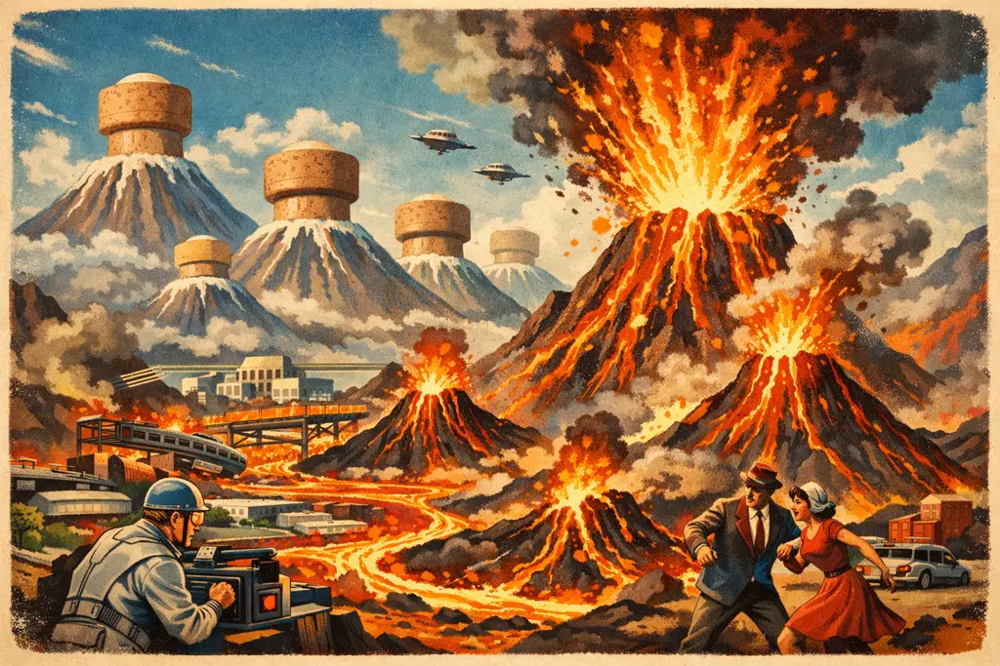

Plagued by Plugs, Virga IV's Tectonics Turn Sour

GEOLOGICAL DIPLOMACY REACHES BOILING POINT AFTER NORTHERN CORKING EXPERIMENT CAUSES DISASTROUS MAGMATIC DISPLACEMENT.
By Amthonie Vandenberg,
European Geopolitical Correspondent
VIRGA IV -- A mild diplomatic disagreement between the planetary neighbours of Virga IV has escalated into a full-scale magmatic inconvenience following an ambitious geo-engineering initiative that experts are already calling "regrettably hasty."
Tensions flared earlier this month when the President of the South Federation—a gentleman known for communicating exclusively in short, bold sentences—complained that smoke from the Northern Federation’s volcanic ranges was ruining the pristine atmosphere of the South. Critics were quick to point out that southern rivers have been entirely devoid of aquatic life for nearly two decades due to heavy industrial run-off, though regional officials maintained the sludge had a "delightfully rustic texture."
In an effort to avoid trade sanctions and the threat of total border closure, the Northern Federation’s Council of Applied Physics opted for what they described as a "neighbourly compromise." Working alongside local enterprise Global Corkage Ltd., engineers inserted several thousand oversized champagne-grade oak stoppers directly into the primary volcanic vents along the northern ridge.
"The initial atmospheric readings were tremendously encouraging," noted Dr. Alastair Finch, Chief Vulcanologist at the Northern Institute of Applied Pretence. "The smoke ceased immediately. Unfortunately, basic fluid dynamics dictate that several million tonnes of subterranean pressure do not simply vanish because one has placed a piece of bark over the hole."
By Tuesday morning, the displaced magma, finding its traditional northern outlets blocked by high-density oak, successfully sought path of least resistance. Geologists confirm that the molten rock traversed the tectonic fault line and erupted through nineteen newly formed fissures located almost entirely within the South Federation.
Southern authorities have expressed profound disappointment at the sudden appearance of lava rivers throughout their primary commercial districts, describing the situation as "deeply unhelpful."
Global Corkage Ltd. has issued a press release emphasising that the corks “performed exactly as intended,” noting that any tectonic redirection of magma constitutes “a natural expression of planetary agency.” The Northern Federation agreed, stating that the stoppers will remain in place until experts can determine whether removing them would make matters better, worse, or “merely differently catastrophic.”